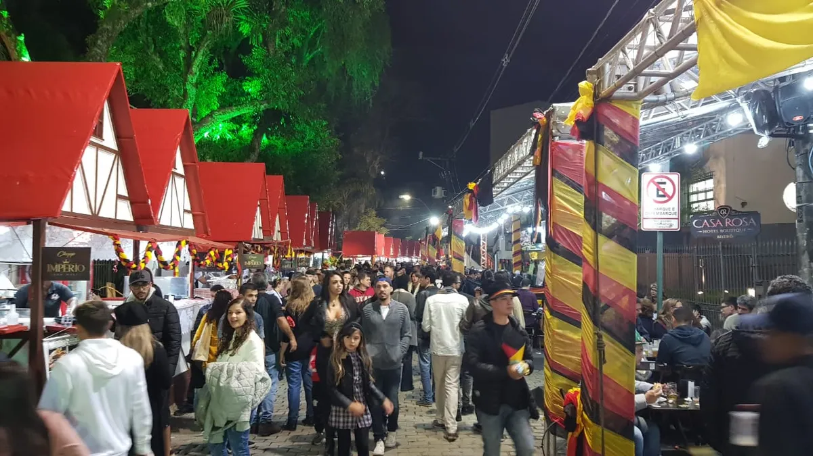
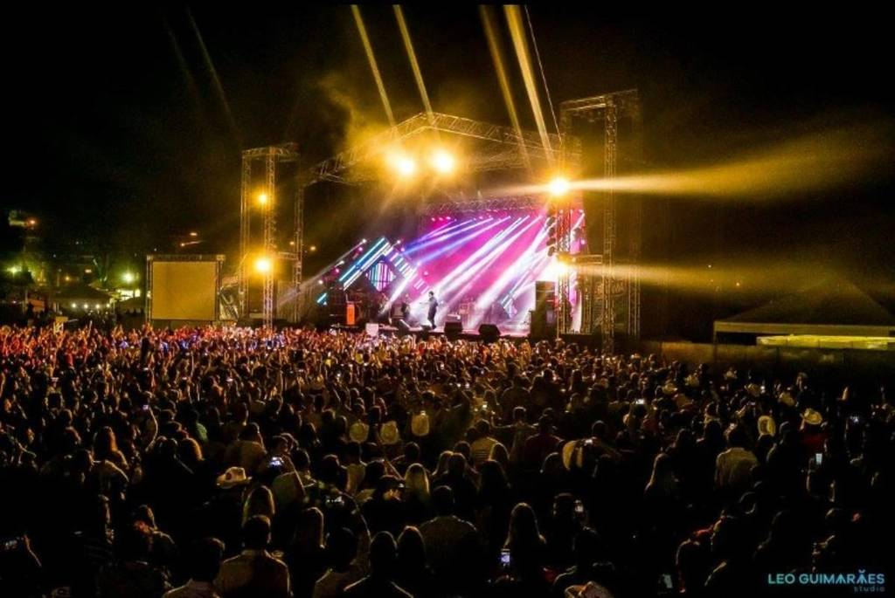
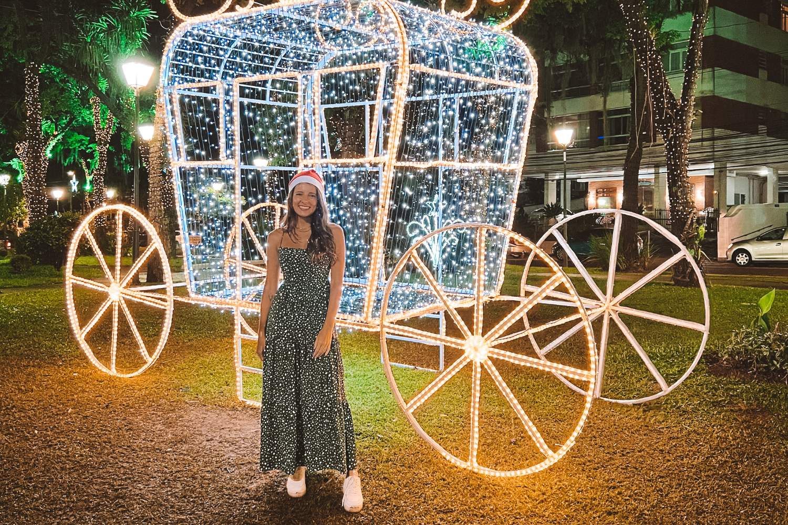

Eventos em Petrópolis
Conheça os principais eventos culturais e tradicionais da cidade:
-
Bauernfest - Festa do Colono Alemão realizada anualmente em junho. Comida típica, danças folclóricas, cerveja artesanal e muita animação!

-
Expo Petrópolis - Evento com shows, gastronomia, exposição de animais e cultura rural. Retornando após 2019 com grande expectativa.

-
Natal Imperial - Evento natalino com atrações culturais, iluminação especial, caravana da Coca-Cola e programação para toda a família.
